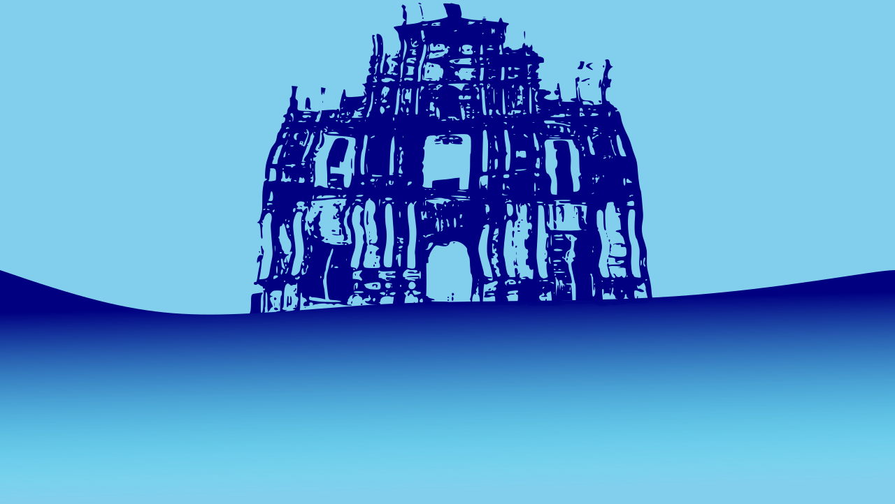
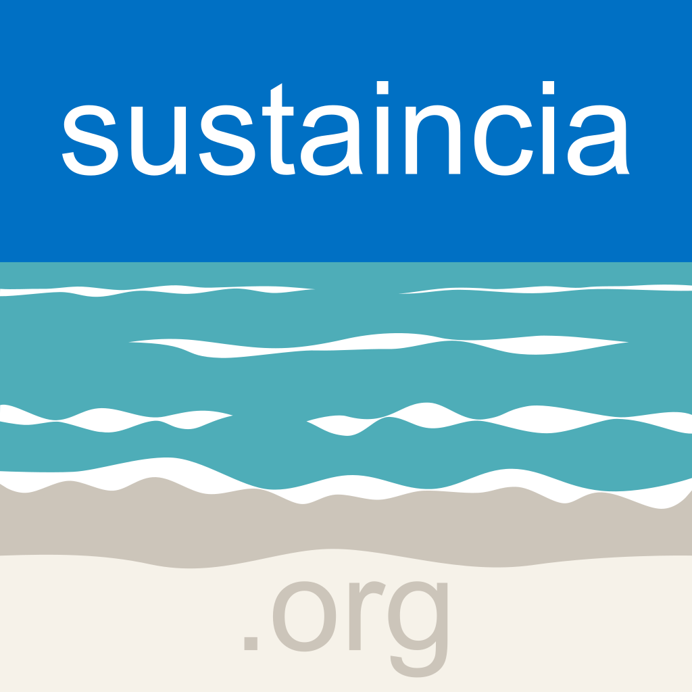
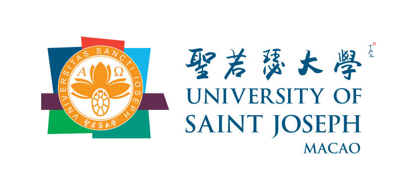
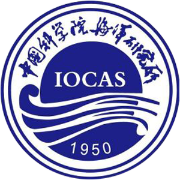
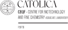

First Sino-Luso Conference on Blue Biotechnology
首届中葡蓝色生物科技研讨会
Apr 24-25, 2025
Macau, China 中国澳门
Event successfully held 活动成功举办
Press Coverage 新闻报道






To bring together researchers and industry professionals from China and Portuguese-speaking countries to foster collaboration in the fields of marine and sustainable biotechnology.
The conference invites participants from research institutions and industries in Portuguese-speaking countries and the Greater Bay Area (GBA), who are interested in knowledge exchange, networking, and developing partnerships to address global sustainability challenges.
汇集中国和葡语国家的研究人员和行业专业人士，促进海洋和可持续生物技术领域的合作。
会议邀请葡语国家和粤港澳大湾区的研究机构和行业人士参加，他们对知识交流、建立联系和发展伙伴关系以应对全球可持续发展挑战感兴趣。

Seeking experts and innovators in marine biotechnology. Sharing groundbreaking research, insights, and forge collaborations that will shape the future of the blue economy.
寻求海洋生物技术领域的专家和创新者。分享开创性的研究和见解，并建立合作关系，共同塑造蓝色经济的未来。
© 2025 sino-luso conference on blue biotechnology